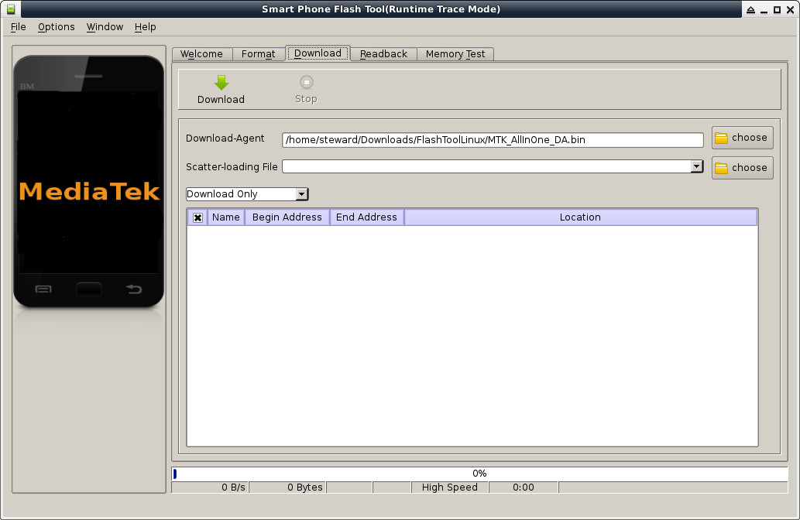
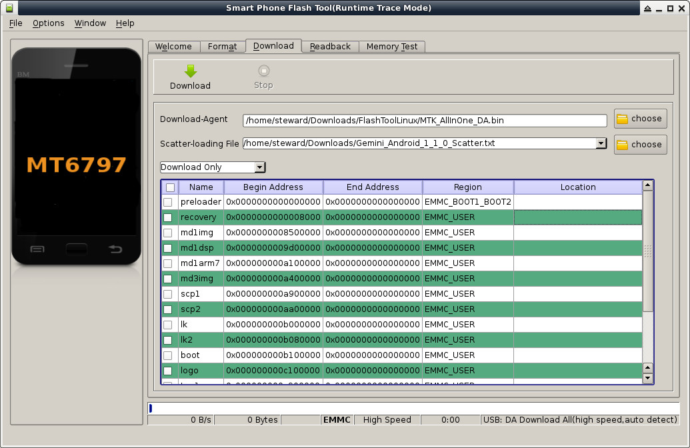
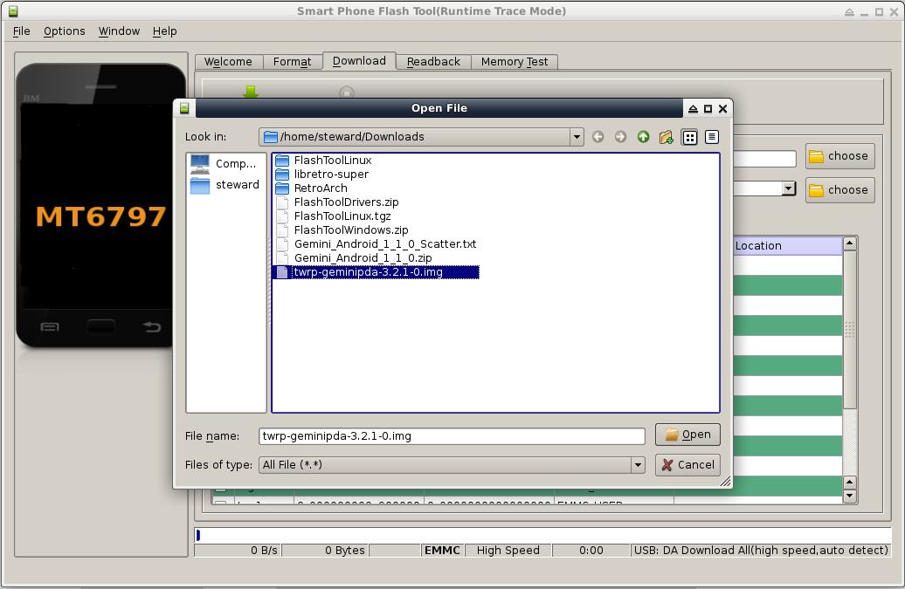
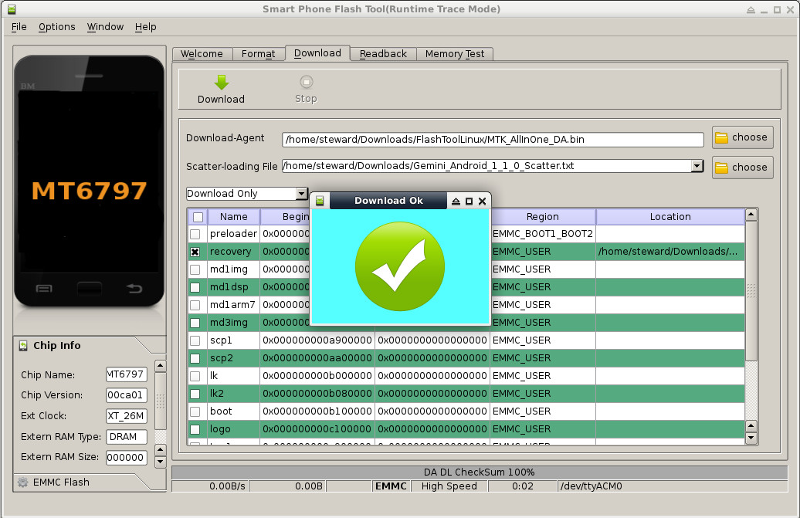
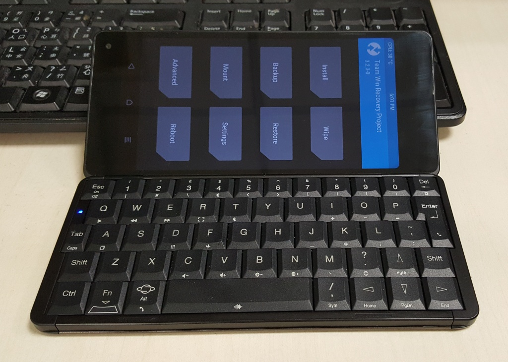

Steward
分享是一種喜悅、更是一種幸福
手機 - Gemini PDA 4G - Android - Root Stock Android 7.1.1
參考資訊：
http://support.planetcom.co.uk/index.php/Android_Flashing_Guide
由於預設出廠的韌體並沒有Root(Bootloader已經Unlock)，而司徒購買此機的目的就是希望可以在這台裝置開發一些東西(必然需要Root功能)，因此，Root機器變成是司徒第一個工作，上網查了一些資料後，發現Gemini PDA除了有TWRP可以安裝之外，官方也有提供Rooted ROM下載安裝使用，這點倒是相當貼心，省去一些煩雜的手續，雖然這兩種方式都可以達到Root目的，不過由於司徒已經安裝許多App在機器上，因此，司徒懶得重新安裝系統，這才選擇使用TWRP的方式Root裝置
步驟如下：
$ cd
$ wget http://support.planetcom.co.uk/download/FlashToolLinux.tgz
$ tar xvf FlashToolLinux.tgz
$ sudo vim /etc/udev/rules.d/20-mm-blacklist-mtk.rules
ATTRS{idVendor}=="0e8d", ENV{ID_MM_DEVICE_IGNORE}="1"
ATTRS{idVendor}=="6000", ENV{ID_MM_DEVICE_IGNORE}="1"
$ sudo service udev restart
$ sudo ./flash_tool.sh

接著載入Scatter-loading檔案(位於剛剛解開的資料夾下)

點選recovery的Location欄位，接著選擇recovery image(自己上XDA網站抓或者Gemini PDA官網抓)

接著按下Download按鈕，再連接USB到Gemini PDA裝置(重要的步驟)，順利完成後，畫面如下：

接著同時按下Esc和側邊的Push按鈕，等到開機畫面顯示後，再放開這兩顆按鈕

P.S. 接著就可以刷入SuperSU檔案